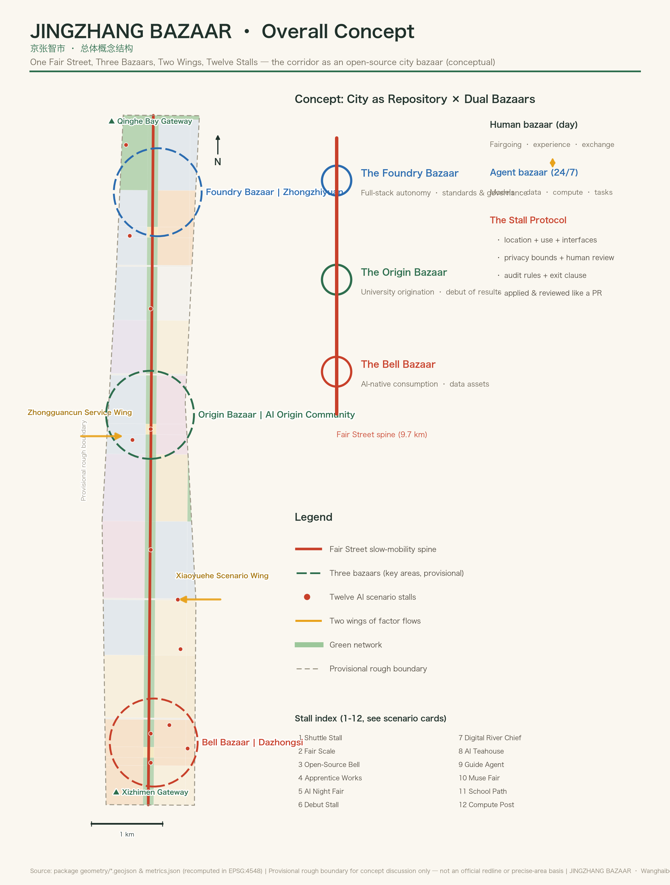
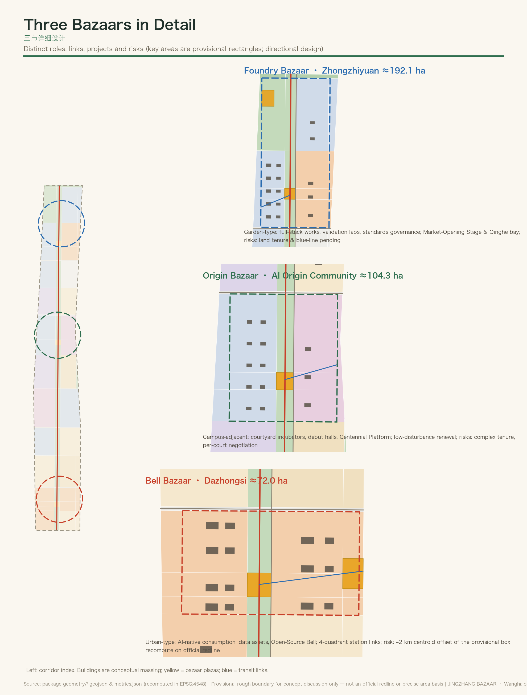
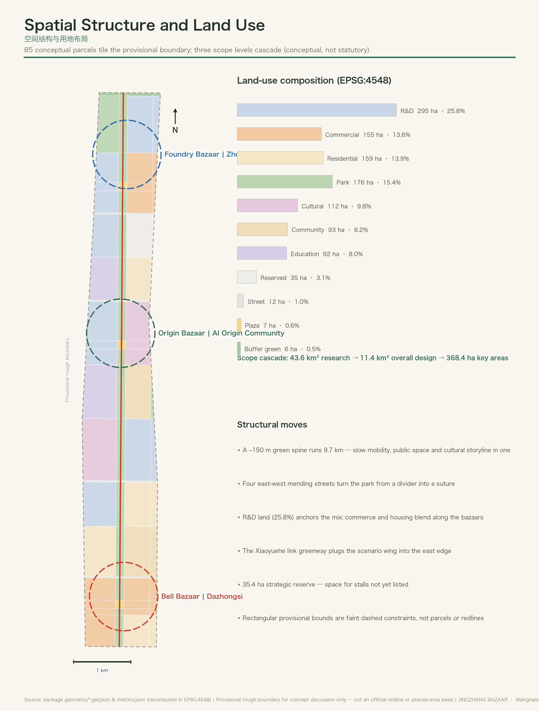
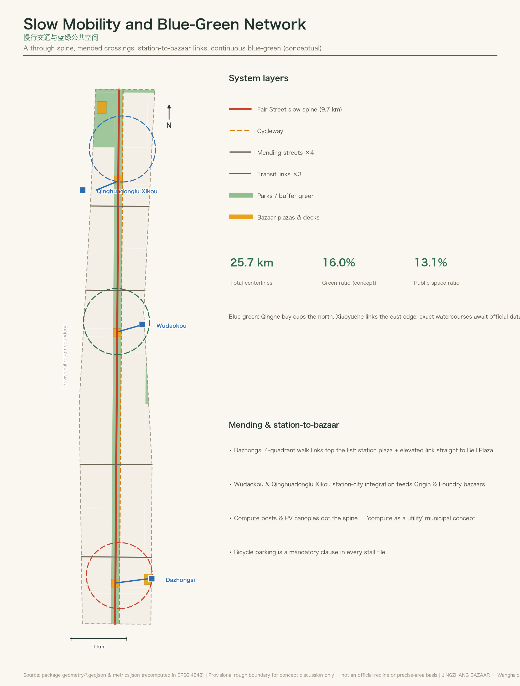
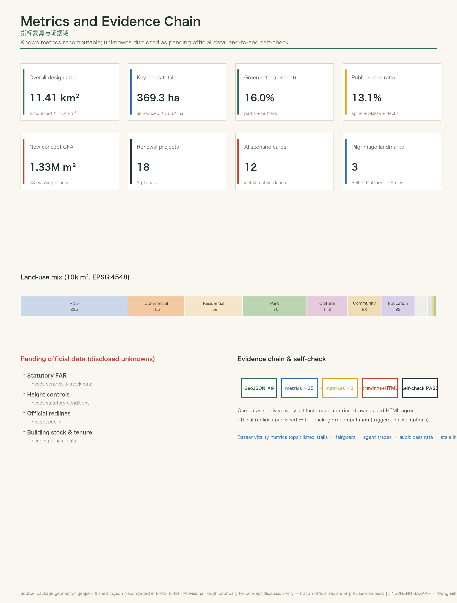

| Level | Scale | Role |
|---|---|---|
| Coordinated research area | ≈43.6 km² | Three areas & two wings — where the bazaar draws from |
| Overall design area | ≈11.4 km² | The bazaar skeleton — one street, three bazaars |
| Key detailed-design areas | ≈368.4 ha | Three bazaars in detail — how the fair opens |
| Bazaar | Announced | Role |
|---|---|---|
| Foundry Bazaar · Zhongzhiyuan | ≈192.1 ha | Garden-type · full-stack autonomy & governance |
| Origin Bazaar · AI Origin Community | ≈104.3 ha | Campus-adjacent · origination & debut |
| Bell Bazaar · Dazhongsi | ≈72.0 ha | Urban-type · AI-native consumption & data assets |



| 1★ Shuttle Stall (L4 test) | 2 Fair Scale (algorithm audit) | 3 Open-Source Bell | 4★ Apprentice Works (robot yard) |
| 5 AI Night Fair | 6 Debut Stall (demo day) | 7★ Digital River Chief | 8 AI Teahouse (senior inclusion) |
| 9 Guide Agent | 10 Muse Fair | 11 School Path | 12 Compute Post |
★ = industry test & validation. Each stall carries a Stall Protocol file: location + use + interfaces + privacy bounds + human review + audit + exit clause.
| Task | Response | Anchor |
|---|---|---|
| Announcement 1.3/1.4/1.5 | Purpose, scopes and tasks fully covered | 17 rows in compliance_matrix.json |
| agent.1 Concept & naming | JINGZHANG BAZAAR · bazaar-street-stall-fair naming grammar · logo direction | Research chapter |
| agent.2 Ecosystem | 8 global cases · City as Repository · Stall Protocol | Research chapter |
| agent.3 Scenarios | 12 scenario cards (3 test-validation) · 6 personas · mapping | Ecosystem chapter |
| agent.4 Public space & landmarks | Open-Source Bell · Centennial Platform · Model Steles · Fair Bricks | Blue-green chapter |
| agent.5 Culture | Three fairs narrative · signpost system · 1435 mm gauge module | Blue-green chapter |
| agent.6 Events & operation | Market-Opening Festival · fair days · bell releases · city-repo community | Renewal chapter |
deterministicspatialvisualprofessional All four local checks PASS (see self_check.json)
Provisional precision notices retained (KEY_AREA_PROVISIONAL, minor); organizer data gaps do not block content scoring.
| Source | Use bounds |
|---|---|
| Official pre-qualification announcement | Governs scopes and design tasks |
| Agent open-call taskbook (cleared) | Six tasks, charter and boundary clause |
| Five mandatory standards | Urban design / regulatory planning / land-use classification (local snapshots) |
| Provisional boundary (maintainers) | Generation & self-check only; not official |
| Case background set (background_only) | 8 global innovation districts, qualitative only |
| ID | Statement |
|---|---|
| A-BOUNDARY-001 | Known offsets of the provisional boundary → full recomputation on official redlines |
| A-DESIGN-001 | Land use / green / public space / roads / phasing are conceptual, not statutory |
| A-DESIGN-002 | Buildings are conceptual massing; FAR & height controls unknown pending data |
| A-CONTROLS-001 | Statutory controls, redlines, tenure and utilities need official attachments |
